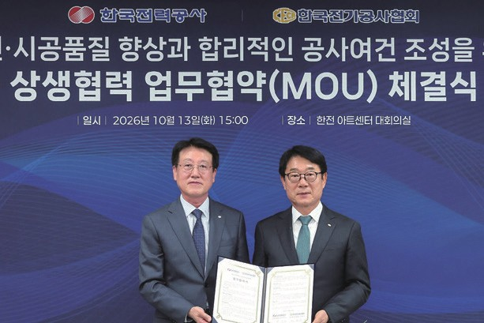
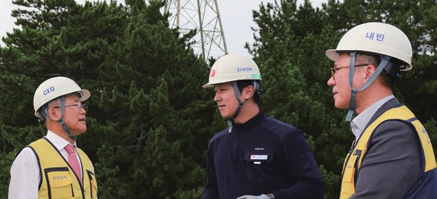
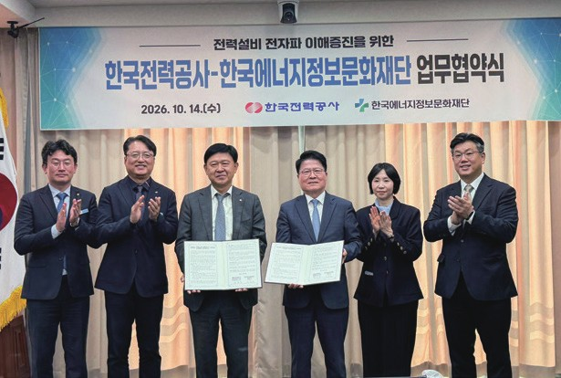
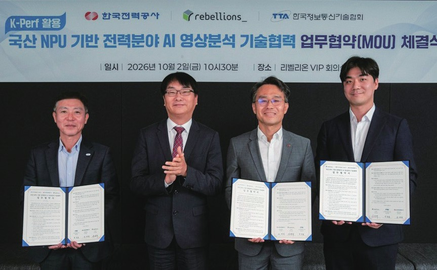

3줄 요약
- 한전은 SK하이닉스와 반도체 산단 전력설비 안정 운영 협약을 맺고, 한국전기공사협회·한국에너지정보문화재단과도 상생협력에 나섰다.
- 리벨리온·TTA와 손잡고 국산 AI 반도체(NPU)를 변전소 CCTV 영상 감시에 시범 도입해 현장 성능을 검증한다.
- 산지 변전소의 조경 의무를 면제하는 법령 개정에 따라 조경수목을 정비하고 산불 안전공간을 확보한다.
1한전-SK하이닉스, ‘K-반도체 초격차’ 강화를 위한 전력공급 파트너십 구축
한전이 SK하이닉스와 손잡고 반도체 생산시설의 안정적인 전력공급과 전력설비 운영을 위한 협약을 체결하고 K-반도체 생산 경쟁력 강화에 나섰다. 반도체 생산시설은 순간적인 전압 강하나 짧은 시간의 정전에도 생산 차질과 큰 경제적 손실이 발생할 수 있어 안정적인 전력공급과 전력설비 운영이 생산 경쟁력을 좌우하는 핵심 요소로 꼽힌다.
이에 한전은 10월 1일 경기도 이천시 SK하이닉스 본사에서 ‘반도체 산단 공급 전력설비 안정적 운영을 위한 업무협약’을 체결했다. 이번 협약은 AI 확산에 따른 반도체 수요 증가에 대응하고 국가 핵심 전략산업인 반도체의 안정적인 생산 기반을 뒷받침하기 위해 마련됐다. 협약에 따라 양 사는 SK하이닉스 전력설비 점검 및 진단 지원, 전력설비 운영 기술 교류 확대, 설비고장 발생 시 신속 복구 협력체계 구축, 한전 인재개발원의 맞춤형 교육과정 운영 등 전력설비 운영 전반에 걸쳐 협력을 확대한다. 이를 통해 반도체 생산 안정성과 전력공급 신뢰도를 높여 나갈 계획이다.
2한·미 전략적 투자 프로젝트 추진 적극 환영
한전은 한·미 양국 정부의 ‘대미 전략적 투자 프로젝트 추진계획’ 발표에 대해 적극적인 환영 의사를 밝혔다. 이번 발표는 2025년 한·미 무역협의와 전략적 투자 양해각서의 이행 의지를 재확인하고, 에너지 분야 협력의 구체적인 청사진을 제시했다는 점에서 그 의미가 크다. 특히 한·미 원전 협력 프레임워크 마련은 양국 에너지 협력의 새로운 이정표가 될 것으로 기대된다.
한전은 국내 전력산업과 UAE 바라카 원전사업을 통해 축적한 경험을 바탕으로 관련 프로젝트의 성공적인 추진에 기여할 계획이다. 또한 한국형 원전 APR1400의 미국 진출을 통해 우리 원전산업의 기술력과 사업관리 역량을 알리고, 국내 원전기업의 미국시장 진출과 글로벌 공급망 참여 확대에도 기여할 것으로 기대된다. 한전은 향후 사업 추진 과정에서 경제성과 사업 리스크를 철저히 관리하고, 정부 및 국내 원전·에너지 기업들과 긴밀히 협력해 이번 투자가 양국의 에너지 안보와 국내 원전산업의 글로벌 경쟁력 강화로 이어질 수 있도록 역할을 다할 계획이다.
3한국전기공사협회와 상생협력 업무협약 체결

한전이 10월 13일 서울 한전 아트센터에서 한국전기공사협회와 상생협력 업무협약(MOU)을 체결했다. 이번 협약은 한전이 전기공사업계와의 협력을 바탕으로 현장의 합리적인 공사 여건을 조성하고, 작업장의 안전성과 시공 완성도를 한층 높이기 위해 마련됐다. 아울러 전기공사업계가 글로벌 시장에서도 경쟁할 수 있는 역량을 갖추도록 선제적으로 뒷받침한다는 취지다.
양 기관은 이번 협약을 통해 산업재해 예방과 안전한 작업환경 조성, 부실시공 예방 등 공사 현장의 시공 품질 향상, 공사비 산정기준, 계약조건 등 관련 제도의 합리적 개선 과제 발굴, 정례 협의체 운영을 통한 주요 현안의 사전 공유·해소, 공정하고 합리적인 공사환경 조성 등 5대 중점 분야를 적극 추진할 계획이다.
4CEO 거제 등 수해지역 및 도서지역 현장경영

김동철 사장이 거제 수해지역과 백령도 등 도서지역, 신안 해상풍력 현장을 잇달아 찾아 안정적 전력공급과 재난 대응, 미래 에너지 신사업 추진 현황을 점검했다.
9월 28일에는 경남 거제 극한호우 피해현장을 찾아 전력설비 복구현황과 임시전력 공급체계를 점검하고, 신속한 복구와 고객 불편 최소화를 위한 현장 대응태세를 확인했다. 아울러 인근 도서와 육지를 연결하는 해월 배전철탑의 설비 상태와 자연재해 취약요인을 직접 살폈다. 이어 거제지사 직원들을 만나 복구과정의 현장 건의사항과 작업안전 개선 의견을 청취하고, 안전관리와 재난 대응체계 보완사항을 점검했다.
앞서 김 사장은 여수·백령·신안지역을 찾아 지역별 전력공급 체계와 설비 운영상황을 점검했다. 특히 백령도 등 도서지역에서는 지리적 특성에 따른 설비 유지보수와 긴급복구 여건을 확인하고, 주민 애로사항과 현장 직원들의 작업안전 개선 의견을 들었다. 신안 해상풍력 단지에서는 사업 추진현황을 점검하며, 직원들에게 해상풍력 산업 생태계 조성과 국내 에너지 자원 활용 확대를 위해 공기업으로서 마중물 역할을 충실히 수행해 줄 것을 당부했다.
한전은 현장에서 수렴한 의견을 바탕으로 주민 불편을 해소하고 재난 대응체계와 작업안전 관리를 강화하는 한편, 해상풍력 등 역점과제를 차질 없이 추진해 미래 에너지 공급 기반을 확충해 나갈 계획이다.
5한국에너지정보문화재단과 전력설비 전자파 정보 제공 협력

한전과 한국에너지정보문화재단이 전력설비 전자파에 대한 객관적인 정보 제공과 국민 신뢰를 높이기 위한 협력에 나섰다. 한전은 10월 14일 나주 본사에서 재단과 ‘전력설비 전자파 이해 증진을 위한 상생협력 업무협약’을 체결했다. 이번 협약은 기존 사업자 중심의 전자파 정보 제공에서 중립 전문기관의 참여를 더해, 국민에게 보다 객관적이고 신뢰할 수 있는 정보를 제공하기 위해 마련됐다.
협약에 따라 한전은 전력설비와 전자파 관련 기술자료 제공 및 현장 지원을 맡고, 재단은 전자파 관련 정보 제공과 지역 주민 소통, 이해증진 사업 등을 추진한다. 향후 두 기관은 실무 협의체를 구성해 구체적인 협력 방안을 마련해 나갈 예정이다.
62026년 ‘세계보건기구(WHO) 눈의 날 기념’ 보건복지부 장관상 수상
한전이 10월 8일 ‘제56회 세계보건기구(WHO) 눈의 날’ 기념식에서 눈 건강 증진과 실명 예방에 기여한 공로를 인정받아 보건복지부 장관상을 수상했다.
‘눈의 날’은 세계보건기구(WHO)에서 눈 건강에 대한 관심을 높이고 실명 예방의 중요성을 알리기 위해 지정된 기념일로, 보건복지부는 매년 눈 건강 증진과 실명 예방에 기여한 개인 및 기관을 선정해 포상하고 있다.
한전은 사회공헌사업 중 하나인 ‘Eye Love Project’를 통해 2011년부터 실명 위기 안질환 수술 및 치료가 필요한 취약계층에 수술비, 치료비, 진료비 등 눈 건강 분야에 대한 지원을 지속해왔다. 특히 정부 지원사업 대상에서 제외되는 취약계층을 대상(만 59세 이하)으로 지원을 이어오고 있어, 의료복지 사각지대 해소를 위한 노력에 높은 평가를 받았다.
7변전소 AI 감시에 ‘국산 AI 반도체(NPU)’ 쓴다… 현장 성능검증 착수

한전이 10월 2일 리벨리온 본사에서 국내 AI 반도체 기업 리벨리온, 한국정보통신기술협회(이하 ‘TTA’)와 ‘국산 NPU 기반 전력 분야 AI 영상 분석 기술협력’을 위한 3자 업무협약(MOU)을 체결했다. 이번 협약은 정부의 소버린 AI 및 국산 AI 반도체 육성 정책에 발맞춰 전력 AI 인프라의 국산화와 다변화를 추진하기 위해 마련됐다. 한전은 앞서 기술검증을 통해 국산 NPU의 AI 영상분석 활용 가능성을 확인하고, 이를 CCTV 영상을 통한 변전소 감시 업무에 시범 도입해 전력 현장에서의 성능과 운영 효율성을 실증한다.
협약에 따라 한전은 전력 현장 시범운영과 활용모델 개발을 담당하고, 리벨리온은 NPU 성능 최적화와 기술지원을 맡는다. TTA는 국산 AI 반도체 성능 평가지표 ‘K-Perf’를 기반으로 전력 현장 운영환경을 반영한 성능과 신뢰성을 검증한다. 세 기관은 실증 결과를 바탕으로 국산 NPU의 전력 분야 적용과 공공부문 확산을 위한 기반을 마련할 계획이다.
8가을철 산불 예방활동 강화
한전이 산지 인근 변전소의 조경 설치 의무를 면제하는 법령 개정에 따라 조경수목 정비와 산불 안전공간 확보 등 가을철 전력설비 산불 예방 활동을 강화한다.
지난해 3월 영남권 대형산불 당시, 산지에 위치한 변전소 내 조경구역 일부가 불에 타면서 인접 전력설비로 산불이 확산될 우려가 제기됐다. 현행 「건축법」 등에 따르면 200㎡ 이상 대지에 건축물을 지을 경우 건축물 연면적에 따라 대지면적의 5~15% 이상을 조경 공간으로 조성해야 한다. 그러나 산지에 위치한 변전소의 조경수목이 산불 확산 경로로 작용할 경우 전력설비 피해는 물론 장기간 정전으로 이어질 우려가 있다. 이에 한전은 재난 상황에서도 안정적인 전력공급 기능을 유지하기 위해 국토교통부 등 관계 부처와 법령 개정을 추진해 왔다.
그 결과 산지 또는 산지 경계로부터 최단거리 50m 이내인 대지에 건축하는 변전소의 조경 의무를 면제하는 내용으로 ‘「건축법」 시행령 제27조’가 올해 7월 28일 개정 및 시행됐다. 이번 법령 개정으로 산지에 위치하거나 인접한 기존 변전소 367곳과 제11차 전력수급기본계획에 반영된 신설 변전소 153곳을 비롯해 향후 건설되는 변전소에도 입지 요건에 따라 조경 의무 면제가 적용된다.
한전은 개정 법령에 따라 기존 변전소는 산불 위험도를 고려해 우선순위를 정하여 2029년까지 조경수목을 단계적으로 정비할 예정이며, 앞으로 신설되는 변전소는 설계 단계부터 조경 설치를 제외할 예정이다. 아울러 조경수목 정비와 조경 설치 제외로 확보한 부지를 산불 확산을 막기 위한 안전공간으로 활용해 변전소 설비 보호를 강화하고 안정적인 전력공급 기반을 마련할 방침이다.
한전은 이번 법령 개정으로 마련된 제도적 기반을 현장에 적극 적용하는 한편, 가을철 산불조심기간 동안 변전소 주변 위험 요인 점검과 감시 등 예방 활동을 강화해 전력설비의 안전성과 재난 대응 역량을 지속적으로 높여 나갈 계획이다.